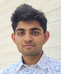

Aadithya Iyer
Graduate Student · Indian Institute of Science, Bangalore · 2025–
M.Tech. student in Computational and Data Sciences at IISc Bangalore, with a background in mechanical engineering from BITS Goa. Research interests span quantum computing, high-performance numerical simulation, machine learning, and robotics.

IISc, Bangalore · 2025–
Education
| Degree / Qualification | Institution | Score | Year |
|---|---|---|---|
| M.Tech. Computational and Data Science | Indian Institute of Science, Bangalore | 8.90 CGPA | 2027 (expected) |
| B.E. Mechanical Engineering | Birla Institute of Technology and Science, KK Birla Goa Campus | 7.94 CGPA | 2024 |
| Class XII · CBSE | Divine Child International School | 93% | 2020 |
| Class X · CBSE | Divine Child International School | 94% | 2018 |
Work Experience
Thermal Engineer · Indian Space Research Organisation (ISRO)
June 2024 – November 2024 · Government of India
Worked as a Thermal Engineer at ISRO. Specific work cannot be disclosed in accordance with government organisation protocols.
Research Interests
- Quantum Algorithms & Quantum Computing — quantum linear algebra, variational methods, and near-term NISQ algorithms
- High-Performance Computing & GPU Programming — CUDA, distributed simulation, numerical linear algebra at scale
- Machine Learning — pattern recognition, neural networks, and deep learning applications
- Numerical Methods for PDEs — spectral methods, finite element approaches, and quantum-inspired solvers
- Robotics & Computer Vision — visual SLAM, robotic manipulation, and perception systems
Projects & Publications
Distributed Krylov Quantum Diagonalization
GPU-accelerated implementation of the Krylov Quantum Diagonalization algorithm for finding ground state energies of quantum systems, using CUDA for distributed computation across multiple GPUs. View project →
Quantum Heat Equation Solution (LCHS)
Implemented the Linear Combination of Hamiltonian Simulation (LCHS) method to solve the heat equation on a quantum computer using Qiskit. View project →
Visual SLAM & Robotic Manipulation
Visual SLAM and Robotic Manipulation
Conference on Computer Vision and Image Processing, 2024
Research on visual simultaneous localisation and mapping combined with robotic manipulation, published at CVIP 2024. View project →
Pattern Recognition & Neural Networks
Coursework and project work in pattern recognition, classification, and neural network architectures as part of the IISc M.Tech. curriculum. View project →
Extra-Curriculars & Achievements
- Placement Representative, IISc Bangalore (2027 batch) — representing the Department of Computational and Data Sciences in placement coordination for the graduating batch.
- National Swimmer — competitive swimmer at the national level.
- PRMO Stage 1 (Class X) — qualified the Pre-Regional Mathematical Olympiad, the first stage of the Indian Mathematical Olympiad pipeline.
- UIEO All India Rank 3 (Class IX) — ranked 3rd nationally in the Unified International English Olympiad.
Contact
aadithyaiyer@iisc.ac.in · GitHub: ExusBurn · aadithyaiyer.com